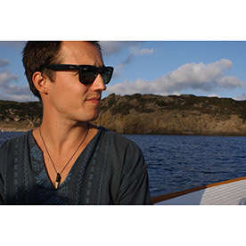
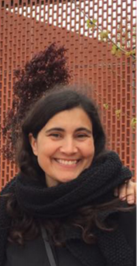

Visita dels experts
El passat dimarts, van venir dos arquitectes per donar-nos una xerrada sobre com es disenya, planifica i construeix un projecte arquitectonic.
El primer en presentar, va ser en Tobias Planas Serra, ens va fer una presentació ensenyant els seus diversos projectes que ha fet dirant la seva carrera. Vam poder veure quin era mes o menys el seu estil
, com li agrada utilitzar elements marins o relacionats amb el mar, per poder conectar la casa amb el mar per molt lluny que estiguin.
ens va ensanyar varios projectes: com una casa a Menorca, un restaurant, un conjunt d'estudis o una de les seves habitacions de casa. Sincerament va ser una molt bona presentació que em va encantar
i em va donar ganes de seguir fent aquest projecte.

Després del Tobias ens va fer una presentació la Marta Vicente Carrió que no ens va parlar de tants projectes, pero ens va parlar de un en concret i de una manera diferent a la del
Tobias. Ens el va explicar desde el punt de vista de com una persona es posa d'acord amb unes cuantes altres per poder tirar cap endevant un projecte d'un casal per els nens.
Obiament també ens va parlar de la part d'arquitectura, de com van disenyar tot l'edifici, de com volien que l'edifici sortís del terra, o de com van fer per donar una sensació de lluminositat a un
espai que estaba sota terra.
